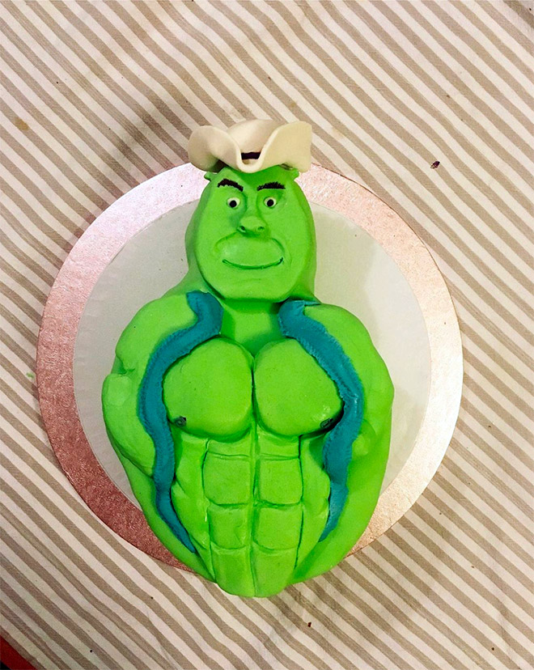

Go Back ←
Shrek Cake

Specifiaclly made with the love and care that oozes from every single Shrek fan of the World.
Ingredients List:
Sponge Cake:
- 4 big eggs
- 90 g icing sugar
- 90 g all-purpose flour
- a pinch of salt
- 1/2 teaspoon of baking powder
Green CREAM:
- 800 ml green juice e.g. made of kiwi
- 120 g custard powder
- 3 tablespoons of crystal sugar
- 100 ml water
White cream:
- 400 ml whipping cream (36%)
- 150 ml water
- 75 g lemon jelly powder
- 2 tablespoons of icing sugar
Additionally:
15 pieces of Jaffa cakes
2 gooseberry jellies in a powder (150 g)
700 ml water
Directions:
Baking Cake:
- Put eggs, icing sugar and a pinch of salt into a bowl.
- Whisk for 4-5 minutes or until fluffy.
- At that point, mix in sifted flour and baking powder in small batches.
- Pour the sponge cake into a baking tin lined with baking paper, then put it in an oven preheated to 180 degrees Celsius for 25 minutes.
- Let the baked cake cool down.
Preparing green CREAM:
- Pour 700 ml of green juice into a pot, add crystal sugar and bring it to a boil. Mix 100 ml of juice, water and custard powder in a cup
- When the juice in the pot starts to boil, pour in the custard from the cup.
- Bring the custard to a boil and simmer for 3-4 minutes, stirring constantly.
- Thoroughly spread the hot custard on the cold sponge cake, place the Jaffa cakes on it with the chocolate side up, and then let the cake cool down.
Preparing white cream:
- Pour boiling water into a bowl, add jelly powder and icing sugar to it.
- Stir until the jelly dissolves thoroughly, then set it aside to bloom.
- Pour the cold whipping cream into a large bowl and whisk it to an almost stiff consistency.
- When the cream is whipped quite well, pour in the thickening jelly with a large stream, whisking the cream all the time.
- Pour the whipped cream over the Jaffa cakes and spread it evenly.
- Next, put the cake in the fridge for a few minutes to thicken the cream.
- Pour the gooseberry jelly into a bowl, pour in boiling water and stir until the jelly is completely dissolved.
- Set it aside for the jelly to bloom.
- Pour the thickening jelly onto the cream.
- After the cake is ready, put it in the fridge for at least 2 hours.
-
Serve with swamp tea.
Move to Top ↑